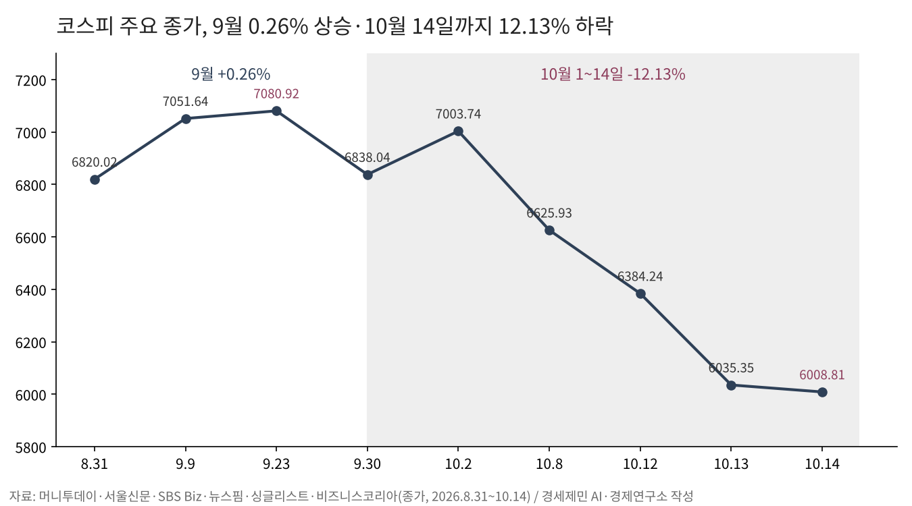
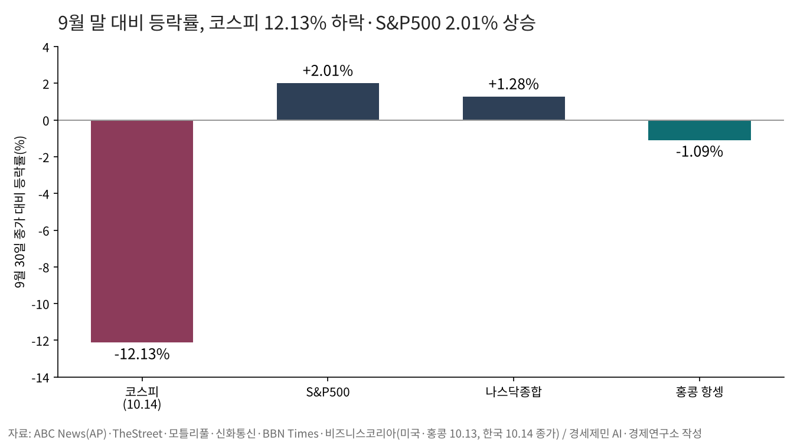
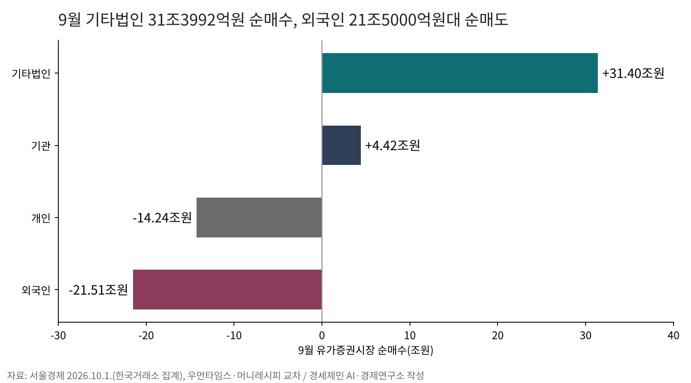
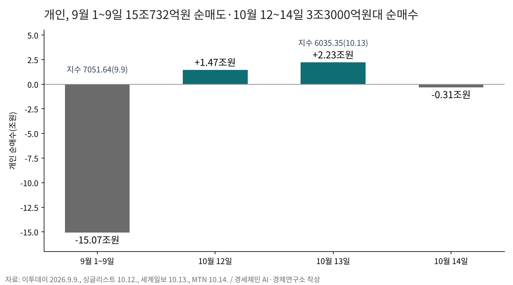
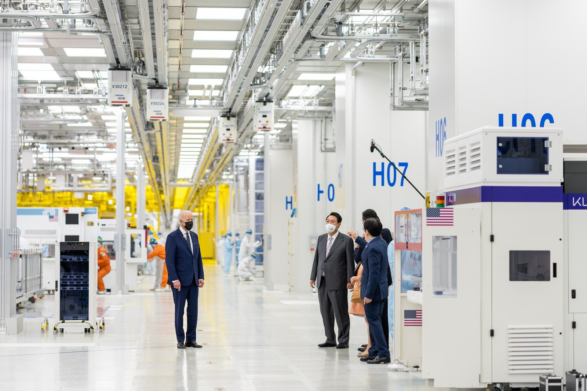
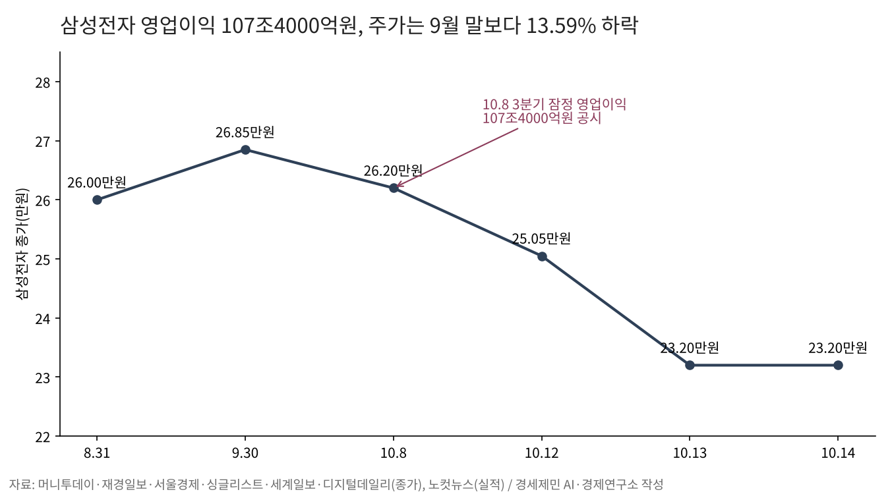
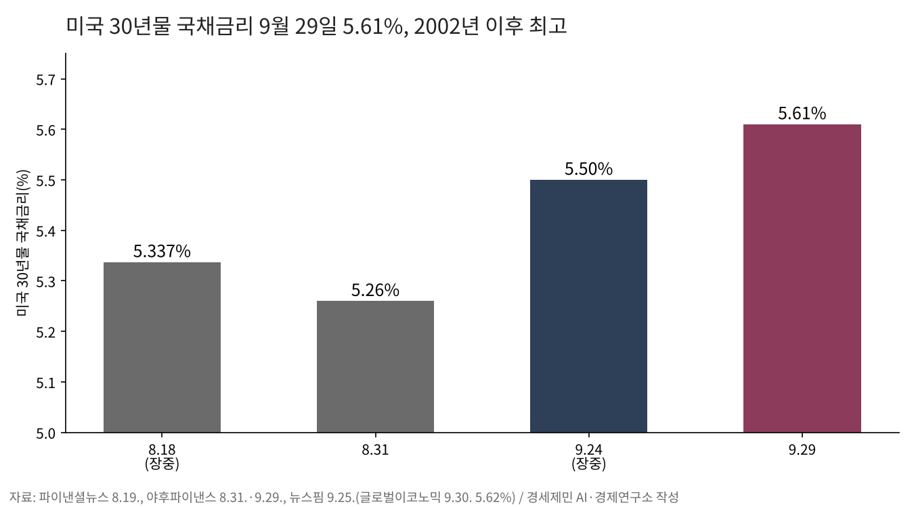

[주식공부] 코스피 12.13% 하락, 자사주 끊긴 자리에 선 개인
기타법인 31조3992억원 순매수, 외국인 21조5000억원대 순매도
10월 14일 코스피 6008.81, 개인 빚투 34조2529억원
자사주 끝난 자리, 다음 받침은 외국인 귀환 여부
(데이터 기준시점: 2026년 10월 14일 한국 종가, 미국·홍콩 지수는 10월 13일 종가. 미국 9월 소비자물가는 10월 14일 발표분 / 마지막 데이터 학습 완료일 2026년 6월 말, 이후 웹검색 검증)
코스피가 9월에 0.26% 올랐다. 8월 31일 6820.02에서 9월 30일 6838.04로 마쳤다. 10월에는 14일까지 12.13% 빠져 6008.81이 됐다. 9월 23일 종가 최고 7080.92에서 15.14% 아래다.
9월 지수를 받친 것은 기타법인이었다. 유가증권시장에서 기타법인은 9월 한 달 31조3992억원을 순매수했다. 같은 달 외국인은 21조5000억원대, 개인은 14조2000억원대를 순매도했다. 그 받침이 끝나 가는 10월 13일 코스피는 5.46% 빠졌다.
개인은 그 자리에서 빚을 늘렸다. 신용거래융자 잔고는 9월 30일 33조3901억원에서 10월 13일 34조2529억원으로 8627억원(2.58%) 불었다. 이 글은 10월 14일 종가 기준이고, 10월 마감까지 12거래일 남았다.
1. 0.26% 오른 9월, 12.13% 빠진 10월
9월은 제자리였다. 9일 코스피는 7051.64로 마쳐 33거래일 만에 종가 7000선을 되찾았다. 23일 7080.92까지 올랐다가 30일 6838.04로 내려왔다. 고점에서 월말까지 3.43% 밀렸다.
10월은 낙폭이 컸다. 2일 7003.74로 5거래일 만에 7000선을 되찾은 지수는 6일부터 6거래일 연속 빠졌다. 12일 3.65% 내린 6384.24, 13일 5.46% 내린 6035.35였다.
13일 장중에는 5911.11까지 밀려 두 달 만에 매도 사이드카가 걸렸다. 하루 낙폭은 8월 19일 5.80% 이후 가장 컸다. 14일에는 장중 6190.65까지 올랐다가 외국인 매도에 6008.81로 마쳤다.

코스닥은 덜 흔들렸다. 반도체 대형주 무게가 덜한 시장이다. 8월 31일 834.29에서 9월 30일 855.91로 2.59% 올랐고, 10월 14일 823.88로 3.74% 내렸다. 두 달 반 누적으로 코스피는 11.89%, 코스닥은 1.25% 빠졌다.
2. "반도체가 다 같이 빠졌다"

같은 반도체 악재라는 말은 절반만 맞다. 9월 30일부터 10월 13일까지 미국 S&P500은 7651.54에서 7805.45로 2.01%, 나스닥종합지수는 26861.06에서 27204.38로 1.28% 올랐다. 홍콩 항셍지수는 24613.27에서 24345.22로 1.09% 내렸다.
9월 한 달로는 차이가 크지 않았다. S&P500은 0.7% 내리고 나스닥은 1.7% 올라 코스피 0.26%와 비슷한 자리에 있었다. 갈라진 것은 10월이다.
방아쇠는 같았다. 중국 창신메모리(CXMT)는 10일 셀 면적을 줄인 차세대 D램을 연내 서버용으로 내놓겠다고 밝혔다. 미국 현지시간 12일 마이크론은 3.8%, 필라델피아 반도체지수는 2.7% 빠졌다.
받는 쪽 크기가 달랐다. 다음 날인 13일 삼성전자는 7.39%, SK하이닉스는 10.09% 내렸다. 같은 소식에 마이크론 3.8%, 삼성전자 7.39%, SK하이닉스 10.09%가 빠진 것은 같은 시점의 숫자다.
국내 업계는 기술 격차를 3년으로 보고 수율은 검증되지 않았다고 말한다. 그 소식이 나온 뒤 13일 하루 두 종목에서 외국인 매도가 3조7208억원 쏟아졌다.
미국 반도체도 무사하지는 않았다. 필라델피아 반도체지수는 13일까지 5거래일 연속 내렸다. 그래도 S&P500은 13일 7805.45로 버텼다. 반도체가 흔들려도 지수 전체가 버틴 시장과 지수가 함께 무너진 시장은 받침 두께가 달랐다.
3. 지수를 받친 돈, 기타법인 31조

여기서 기타법인을 짚고 가자. 거래소는 매매 주체를 개인, 외국인, 기관, 기타법인으로 가른다. 기타법인은 증권사·은행·연기금이 아닌 일반 회사다. 회사가 제 주식을 사면 이 칸에 잡힌다.
9월 기타법인 순매수 대부분은 두 회사 자사주였다. 전자신문 집계로 9월 기타법인은 삼성전자를 10조2955억원, SK하이닉스를 21조9832억원 사들였다. 같은 달 외국인은 SK하이닉스 11조5805억원, 삼성전자 4조8920억원을 팔았다.
매입은 일정보다 빨리 끝났다. 삼성전자는 8월 24일부터 10월 6일까지 5685만6305주, 14조9999억원어치를 사서 매입을 마쳤다고 10월 12일 공시했다. SK하이닉스는 9월 말 예정 물량 가운데 70%대를 채워 10월 중순 종료가 전망됐다.
받침이 빠지자 매도가 그대로 드러났다. 10월 12~14일 사흘 동안 외국인은 유가증권시장에서 7조7000억원대를 순매도했다. 같은 사흘 코스피는 6625.93에서 6008.81로 9.31% 빠졌다. 외국인 올해 코스피 누적 순매도는 12일까지 199조원을 넘었다.
자사주 매입은 끝이 정해진 매수다. 살 물량과 기간이 이사회 결의로 미리 정해진다. 그 물량을 다 채우면 같은 값에 사 줄 손이 사라진다. 9월 0.26%는 그 정해진 매수가 외국인 매도를 덮은 숫자였다.
4. "개미는 늘 늦는다"

9월 개인은 오르는 자리에서 팔았다. 9월 1~9일 개인은 15조732억원을 순매도했다. 지수는 그 9일 7051.64로 7000선을 되찾았다. 한 달로는 14조2000억원대 순매도였다.
10월에는 거꾸로 섰다. 12~14일 개인은 3조3000억원대를 순매수했다. 12일 1조4674억원, 13일 2조2000억원대를 받았다. 13일 외국인이 판 4조5157억원 가운데 절반 가까이를 개인이 받아낸 셈이다.
통념은 이 구간에 반만 맞았다. 9월에 판 개인은 이후 하락을 피했다. 9월 말 6838.04도 14일 6008.81보다 13.80% 높다. 반대로 12일 종가 6384.24 언저리에서 산 물량은 14일 기준 5.88% 아래다.
빚을 낸 매수가 함께 늘었다. 신용거래융자 잔고는 12일 34조2886억원으로 7월 중순 뒤 가장 많았다. 13일에는 34조2529억원이었다. 그날 담보가 모자라 증권사가 강제로 판 반대매매는 593억5000만원으로 두 달여 만에 가장 많았다.
손실은 받침이 사라지는 자리에서 산 물량에 몰렸다. 자사주 매입이 10월 초·중순에 끝난다는 진척률은 9월 30일 이미 보도됐다. 그 숫자를 펴 본 일과 헤드라인을 따른 일은 같은 10월에 다른 결과로 이어졌다.
5. 영업이익 107조원과 주가 13.59% 하락

실적은 예상을 넘었다. 삼성전자는 10월 8일 3분기 잠정 영업이익을 107조4000억원으로 공시했다. 지난해보다 782.5% 늘었고 컨센서스 105조4000억~106조6000억원을 웃돌았다. 매출 195조원은 에프앤가이드 컨센서스 200조6000억원에 못 미쳤다.
주가는 반대로 갔다. 9월 30일 26만8500원이던 삼성전자는 10월 14일 23만2000원으로 13.59% 빠졌다. 107조원을 벌었다고 공시한 회사 주식이 그 다음 사흘 거래일 동안 11.45% 빠졌다.

이익과 값을 가른 것은 누가 사느냐였다. 9월 삼성전자를 산 큰손은 회사 자신이었고 외국인은 4조8920억원을 팔았다. 회사가 쓴 돈이 외국인이 빠져나가는 출구 값을 받쳤다.
회사가 산 값과 지금 값도 갈렸다. 삼성전자 자사주 평균 매입가는 주당 26만3823원이었다. 14일 종가 23만2000원은 그보다 12.06% 낮다. 회사가 사 들인 값과 지금 시장 값 사이에 주당 3만1823원 틈이 생겼다.
그 자사주는 없어지지도 않는다. 이번 15조원어치는 임직원 보상용이고 소각 여부는 2027년 1월 이사회에서 정한다. 유통주식수가 줄지 않으니 1주가 갖는 이익 몫도 그대로다. 버는 일과 나누는 일과 주가가 오르는 일은 서로 다른 일이다.
6. 받침 빠진 11월, 축은 금리와 외국인

먼저 앞선 전망을 되짚는다. 8월 27일 글은 지켜볼 자리로 미국 30년물 5.337% 재돌파와 외국인 순매도 지속을 꼽았다. 30년물은 9월 24일 장중 5.50%를 넘었고 29일 5.61%로 2002년 이후 최고를 찍었다. 그 사이 코스피는 9월 23일 고점에서 30일까지 3.43% 밀렸다.
빗나간 것도 있다. 그 글은 SK하이닉스 자사주 매수가 11월 19일까지 들어온다고 봤다. 실제 매입은 일정보다 빨라 10월 중순 종료가 전망됐다. 받침이 빠진 시점이 한 달 앞당겨졌다.
거시 다섯 가운데 금리와 물가가 무겁다. 미국 연방준비제도(연준)는 9월 16일 기준금리를 0.25%포인트 올려 3.75~4.00%로 했다. 점도표는 연내 한 번 더 올림을 시사했다. 미국 9월 소비자물가는 3.7%로 예상 3.6%를 넘었다.
유가와 환율은 갈렸다. 브렌트유는 10월 13일 배럴당 104달러대(약 14만원)로 8월 26일 88.82달러보다 17% 넘게 올랐다. 원달러 환율은 8월 31일 1368.6원에서 10월 14일 1338.3원으로 내렸다. 외국인이 9월에만 21조원 넘게 팔았는데도 원화 값은 2.21% 올랐다.
다음 구간을 가를 일정은 둘이다. 22일 한국은행 금융통화위원회와 미국 시각 28일 연방공개시장위원회(FOMC) 결정이다. 한국 기준금리는 7월과 8월 두 차례 올라 3.00%, 연준 상단은 4.00%다.
개인이 지켜볼 숫자는 셋이다. 외국인이 순매수로 돌아서는지, 34조원대 신용잔고가 줄어드는지, 30년물이 5.61%를 넘는지다. 회사 돈이 빠진 자리를 외국인 돈이 다시 채우는 일과 개인 빚이 메우는 일은 다른 결과로 이어진다.
참고문헌
가. 공식 발표자료
- 미국 연방준비제도, "Federal Reserve Board - Calendar: October 2026"(FOMC 10월 27~28일 일정), https://www.federalreserve.gov/newsevents/2026-october.htm
- 미국 연방준비제도, "H.15 Selected Interest Rates (Daily)", 2026.10.13., https://www.federalreserve.gov/releases/h15/
나. 언론 보도 — 국내 증시와 수급
- "코스피 6820.02 마감…삼전닉스 '자사주 매입'이 받쳤다", 머니투데이, 2026.8.31., https://www.mt.co.kr/stock/2026/08/31/2026083116033217471
- "원/달러 환율, 3.9원 내린 1368.6원", 머니투데이, 2026.8.31., https://www.mt.co.kr/economy/2026/08/31/2026083115361066531
- "코스피, 33거래일 만에 7000 돌파 마감", 서울신문, 2026.9.9., https://www.seoul.co.kr/news/economy/2026/09/09/20260909500293
- "\"7000 넘어도 안 믿는다\"…'박스피'에 데인 개미, 9월 들어 15조 팔았다", 이투데이, 2026.9.9., https://www.etoday.co.kr/news/view/2623658
- "외국인·개인 물량 쏟아내는데…삼전닉스 자사주 매입 막바지, '증시 버팀목' 어쩌나", 전자신문, 2026.9.30., https://www.etnews.com/20260930000431
- "사이드카도 멈춘 9월 코스피…7000선 회복 뒤 다시 6800선대", 우먼타임스, 2026.9.30., https://www.womentimes.co.kr/news/articleView.html?idxno=106641
- "6838.04 마감한 코스피", 뉴스핌, 2026.9.30., https://www.newspim.com/news/view/20260930001088
- "삼성전자 26만8500원 마감…1%대 하락하며 시장 부담 가중", 재경일보, 2026.9.30., https://news.jkn.co.kr/post/1002432
- "9월에도 21.5조 팔아치운 외인…삼전닉스부터 던졌다", 서울경제, 2026.10.1., https://m.sedaily.com/article/20096754
- "코스피, 5거래일 만에 7천선 탈환…0.46% 오른 7003 마감", SBS Biz, 2026.10.2., https://biz.sbs.co.kr/article/20000338145
- "삼성전자, 최대 실적에도 주가는 하락…외국인 8거래일 연속 순매도 [마켓시그널]", 서울경제, 2026.10.10., https://m.sedaily.com/article/20099988
- "외국인 2조원 순매도, 코스피 6384 마감...삼성전자·SK하이닉스 4%대 급락", 싱글리스트, 2026.10.12., https://www.slist.kr/news/articleView.html?idxno=772774
- "[속보] SK하이닉스 -10%…파랗게 질린 코스피 5.46% 급락 마감", 서울신문, 2026.10.13., https://www.seoul.co.kr/news/economy/securities/2026/10/13/20261013500211
- "하이닉스, 10% 폭락해 '140만 닉스' 마감… 삼전도 7.4%↓", 세계일보, 2026.10.13., https://www.segye.com/newsView/20261013518257
- "외국인, 이달 8조 팔아…올해 코스피 외국인 199조 순매도", SBS Biz, 2026.10.12., https://biz.sbs.co.kr/article/20000339434
- "외국인 4.5조원 '매도 폭탄'…삼성전자·SK하이닉스 3.7조원 이탈", 싱글리스트, 2026.10.13., https://www.slist.kr/news/articleView.html?idxno=773064
- "'이러니 코스피 녹아내리지' 여기저기 곡소리…무려 '200조'나 팔았다", 헤럴드경제, 2026.10.13., https://biz.heraldcorp.com/article/10901059
- "[마감 시황] 외인 '1.1조 폭풍 매도'에 코스피 6000선 턱걸이 마감", 비즈니스코리아, 2026.10.14., https://www.businesskorea.co.kr/news/articleView.html?idxno=278811
- "외인 1.2조 '팔자'에 반등 무산…코스피 6000선 간신히 사수 [마켓시그널]", 서울경제, 2026.10.14., https://m.sedaily.com/article/20101567
- "'장 초반 2% 반등도 무산'…코스피 6거래일째 하락, 6000선 턱걸이 사수", 디지털데일리, 2026.10.14., https://www.ddaily.co.kr/page/view/2026101416022233956
- "원·달러 환율 다시 1330원대로…달러 약세에 하루 만에 하락 전환", 베타뉴스, 2026.10.14., https://www.betanews.net/article/view/beta202610140152
- "삼전·닉스 이제 누가 사려나···자사주 매입, 10월 초중순 종료", 경향신문, 2026.9.30., https://www.khan.co.kr/article/202609301800001
- "삼성전자, 15조원 자사주 매입 완료…보유액 28조원 돌파", 뉴스핌, 2026.10.12., https://www.newspim.com/news/view/20261012001432
- "삼성전자, 15조원 규모 자사주 취득…5685만6305주 매입", CBC뉴스, 2026.10.12., https://www.cbci.co.kr/news/articleView.html?idxno=614575
- "코스피 급락하자…빚투 34조원 돌파, 3개월 만에 최대", 한국경제, 2026.10.13., https://www.hankyung.com/article/2026101397797
- "지수 반등에 베팅… 34조까지 불어난 빚투", 파이낸셜뉴스, 2026.10.14., https://www.fnnews.com/news/202610141810193650
- "코스피 6천선 흔들리자 반대매매 급증…빚투 부담 현실화", 이투데이, 2026.10.14., https://www.etoday.co.kr/news/view/2635802
다. 언론 보도 — 반도체와 해외 증시
- "中 CXMT 차세대 D램, 삼전닉스 따라잡나…미장·국장 반도체 줄하락", 머니투데이, 2026.10.13., https://www.mt.co.kr/world/2026/10/13/2026101309232036856
- "中 차세대 D램, 삼전닉스 주도판 흔든다?…\"기술격차 3년\" 업계 선긋기", 머니투데이, 2026.10.14., https://www.mt.co.kr/world/2026/10/14/2026101322330991572
- "中 CXMT, 차세대 D램 기술 공개에 SK하이닉스·마이크론 동반 급락", 뉴스핌, 2026.10.12., https://www.newspim.com/news/view/20261012001542
- 김구연, "'엔비디아도 넘었다' 삼성전자, 3분기 영업익 107조 '새 역사'", CBS노컷뉴스, 2026.10.8., https://www.nocutnews.co.kr/news/6588602
- "How major US stock indexes fared Wednesday 9/30/2026", ABC News(AP), 2026.9.30., https://abcnews.com/Business/wireStory/major-us-stock-indexes-fared-wednesday-9302026-136901112
- "Stock Market Today (Oct. 13, 2026): Nasdaq, S&P 500 flat as mixed bank earnings and chip weakness weigh on stocks", TheStreet, 2026.10.13., https://www.thestreet.com/stock-market-today/stock-market-today-dow-jones-sp-500-nasdaq-updates-oct-13-2026
- "뉴욕증시, 반도체 5거래일 연속 약세에 하락 마감", 뉴스핌, 2026.10.14., https://www.newspim.com/news/view/20261014000021
- "Stock market today: Dow, S&P 500 post monthly losses in September as Treasury yields climb", Yahoo Finance, 2026.9.30., https://finance.yahoo.com/markets/live/stock-market-today-wednesday-september-30-dow-sp-500-nasdaq-080339262.html
- "Stock Market Today, Oct. 13: Markets Edge Lower as Earnings Season Kicks Off", The Motley Fool, 2026.10.13., https://www.fool.com/coverage/stock-market-today/2026/10/13/stock-market-today-oct-13-markets-edge-lower-as-earnings-season-kicks-off/
- "Hong Kong's Hang Seng Index closes 0.3 pct higher", 신화통신(Xinhua), 2026.10.13., https://english.news.cn/20261013/c79d53a16f9849abafef8df90664657c/c.html
- "Hong Kong Stock Exchange Closed for National Day on 1 October 2026: Hang Seng Holds at 24,613.27 Ahead of Friday Reopening Without Stock Connect", BBN Times, 2026.10., https://www.bbntimes.com/financial/hong-kong-stock-exchange-closed-for-national-day-on-1-october-2026-hang-seng-holds-at-24-613-27-ahead-of-friday-reopening-without-stock-connect
라. 언론 보도 — 금리와 물가
- "September 2026 Fed Meeting: The Fed Raises Rates to 3.75-4.00%, the Dot Plot Adds One More, and Stocks Turn Lower", Regards of Wall Street, 2026.9.16., https://www.regardsofwallstreet.com/news/september-2026-fed-meeting-dates-hike-odds
- "Stock market today: Dow, S&P 500, Nasdaq slip but cap winning month for stocks", Yahoo Finance, 2026.8.31., https://finance.yahoo.com/markets/live/stock-market-today-monday-august-31-dow-sp-500-nasdaq-113851714.html
- "[채권/외환] 美 30년물 금리 장중 5.5% 돌파…달러는 두 달 만에 최고", 뉴스핌, 2026.9.25., https://www.newspim.com/news/view/20260925000030
- "30-year Treasury climbs to highest level since 2002", Yahoo Finance, 2026.9.29., https://finance.yahoo.com/markets/article/30-year-treasury-climbs-to-highest-level-since-2002-132103385.html
- "美 30년물 금리 5.62%…바이백에도 24년 만에 최고", 글로벌이코노믹, 2026.9.30., https://www.g-enews.com/article/Global-Biz/2026/09/2026093009171727259a1f309431_1
- "美 물가 예상 웃돈 3.7%…휘발유값 9.1% 급등", 파이낸셜뉴스, 2026.10.14., https://www.fnnews.com/news/202610142144532130
- "한국 기준금리 발표일 10월 22일과 11월 26일, 두 달 연속 올린 뒤라 이번이 다른 이유", marketlog, https://marketlog.co.kr/rate-decision-calendar-2026/
마. 수급 집계 교차 자료
- "[월간 수급-외국인] 2026년 09월 한국 증시 업종·종목별 외국인 수급 보고서", 머니레시피, 2026.10., https://moneyrecipe.blog/monthly-flow-report-202609-foreign/
바. 사진 출처
- [사진2] Cameron Smith(미국 백악관 공식 사진), "P20220520CS-0484 (52195348752).jpg", 위키미디어 공용, 퍼블릭 도메인, https://commons.wikimedia.org/wiki/File:P20220520CS-0484_(52195348752).jpg
- [도표1]~[도표6] 경세제민 AI·경제연구소 작성, 자료는 위 참고문헌(2026.8.18~10.14)